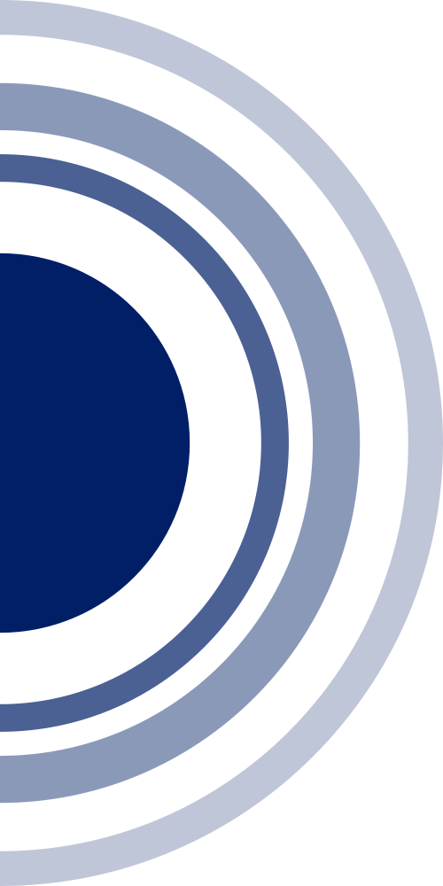

01 — Tabla completa
| Grado | Norma ASTM | Equivalente EN | Resistencia a la corrosión | Usos habituales |
|---|---|---|---|---|
| Acero al carbono | ||||
| WCB | ASTM A216 | 1.0619 | Válvulas y piezas a presión | |
| WCC | ASTM A216 | — | Válvulas y piezas a presión | |
| LCB | ASTM A352 | — | Servicio a baja temperatura | |
| LCC | ASTM A352 | — | Servicio a baja temperatura | |
| Inoxidable austenítico | ||||
| CF8 | ASTM A351 | 1.4308 | Válvulas, bombas, industria química | |
| CF3 | ASTM A351 | — | Versión bajo carbono de CF8 | |
| CF8M | ASTM A351 | 1.4408 | Medios con cloruros, química | |
| CF3M | ASTM A351 | — | Versión bajo carbono de CF8M | |
| Dúplex | ||||
| 4A · CD3MN | ASTM A890 / A995 | 1.4470 | Petróleo y gas, desalación | |
| 1B · CD4MCuN | ASTM A890 / A995 | — | Bombas y medios abrasivos | |
| Superdúplex | ||||
| 5A · CE3MN | ASTM A890 / A995 | 1.4469 | Agua de mar, offshore | |
| 6A · CD3MWCuN | ASTM A890 / A995 | — | Agua de mar, alta presión | |
Equivalencias EN y resistencia a la corrosión orientativas. [Listado provisional: confirmar con Calidad los grados que se trabajan.]

02 — Consulta
Le confirmaremos la viabilidad del mecanizado y de los ensayos. Para valorar su consulta con rapidez, indíquenos: